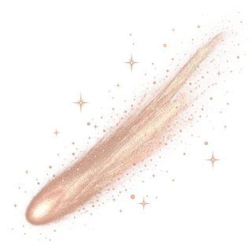
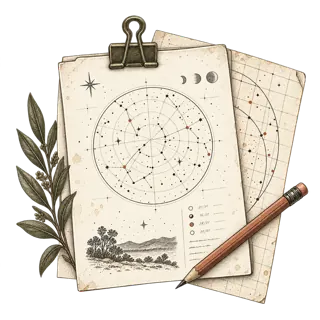
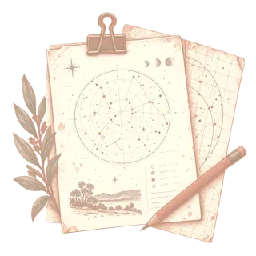

← Annual almanac
Complete datasets
Open data for your own exploration. Explore and download the complete datasets behind this almanac.
Browse all datasets →
Night planning Deep sky Planets and satellites Events and targets Supporting and provenance
CSV library · 01
Night planning 4 downloadable files.
300 records
Low-Moon dark periods Astronomical darkness with acceptably low Moon interference.
File details
Filename moon_dark_windows.csv
Columns Date, Start local, End local, Duration minutes, Moon illumination Download CSV ↓
365 records
Moon phase and illumination Daily lunar phase index and illuminated fraction.
File details
Filename moon_phase.csv
Columns Date, Moon phase index, Moon illumination Download CSV ↓
365 records
Moonrise and moonset Local Moon rise and set times.
File details
Filename moonrise_moonset.csv
Columns Date, Moonrise local, Moonset local Download CSV ↓
365 records
Sun and twilight Astronomical dusk and dawn for every local date.
File details
Filename sun_twilight.csv
Columns Date, Dusk astronomical local, Dawn astronomical local Download CSV ↓
CSV library · 02
Deep sky 2 downloadable files.
11 records
Milky Way monthly summary Monthly Milky Way opportunity totals and maxima.
File details
Filename milky_way_monthly_summary.csv
Columns Month, Window count, Excellent count, Best altitude deg Download CSV ↓
205 records
Milky Way core visibility Computed Milky Way core observing windows.
File details
Filename milky_way_windows.csv
Columns Date, Start local, End local, Duration minutes, Max altitude deg, Quality Download CSV ↓
CSV library · 03
Planets and satellites 4 downloadable files.
16424 records
Jupiter moon offsets Jupiter satellite positions at sampled times.
File details
Filename jupiter_moons.csv
Columns System, Date, UTC date and time, Local date and time, Moon, Dra arcsec, Ddec arcsec Download CSV ↓
2555 records
Daily planet visibility Daily planet visibility calculations.
File details
Filename planet_visibility_daily.csv
Columns Date, Planet, Best time local, Max altitude deg, Solar elong deg, Twilight best time local, Twilight max altitude deg, Visibility rating, Observation period, Sun altitude deg, All day best time local, All day max altitude deg Download CSV ↓
84 records
Monthly planet visibility Best monthly dates and ratings by planet.
File details
Filename planet_visibility_monthly_summary.csv
Columns Month, Planet, Best date, Best altitude deg, Rating, Best time local, Observation period, Solar elong deg Download CSV ↓
12126 records
Saturn moon offsets Saturn satellite positions at sampled times.
File details
Filename saturn_moons.csv
Columns System, Date, UTC date and time, Local date and time, Moon, Dra arcsec, Ddec arcsec Download CSV ↓

CSV library · 04
Events and targets 6 downloadable files.
30 records
Eclipses and planetary phenomena Eclipses, elongations, oppositions and stationary dates.
File details
Filename astronomical_phenomena.csv
Columns Local date and time, Category, Target, Event, Value, Visibility, Altitude deg, Details Download CSV ↓
61 records
Comet opportunities Comet calculations, including unavailable query results.
File details
Filename comets.csv
Columns Target, Best datetime utc, Best datetime local, Best altitude deg, Best apmag, Solar elong deg, Score, Rating, Amateur chaseable, Source, Calc status, Magnitude note Download CSV ↓
214 records
Conjunctions Computed close approaches and conjunction circumstances.
File details
Filename conjunctions.csv
Columns Date local, Event type, Primary body, Secondary body, Separation deg, Event time local, Alt primary deg, Alt secondary deg, Sun altitude deg, Solar elong deg, Moon illumination, Visibility rating, Score, Is solar transit, Safety note Download CSV ↓
636 records
Lunar occultations Site-specific disappearance and reappearance predictions.
File details
Filename lunar_occultations.csv
Columns Local date and time, Target, Target mag, Moon altitude deg, Limb, Event type, Is planetary, Score Download CSV ↓
5 records
Meteor showers Meteor shower peaks and local observing conditions.
File details
Filename meteor_showers.csv
Columns ID, Name, Peak date local, Radiant alt peak deg, Radiant alt predawn deg, Moon illumination, Zenithal hourly rate, Score, Rating, Notes Download CSV ↓
6 records
Minor planet opportunities Ranked minor-planet opportunities.
File details
Filename minor_planets.csv
Columns Target, Best datetime utc, Best datetime local, Best altitude deg, Best apmag, Solar elong deg, Score, Rating Download CSV ↓


CSV library · 05
Supporting and provenance 7 downloadable files.
1 records
Ui notes.context Supporting data with 6 columns.
File details
Filename ui_notes.context.csv
Columns Note id, Section, Title, Body, Score, Date local Download CSV ↓
1918 records
Ui notes Supporting data with 6 columns.
File details
Filename ui_notes.csv
Columns Note id, Section, Title, Body, Score, Date local Download CSV ↓
1912 records
Ui notes.events Supporting data with 6 columns.
File details
Filename ui_notes.events.csv
Columns Note id, Section, Title, Body, Score, Date local Download CSV ↓
1 records
Ui notes.milky way Supporting data with 6 columns.
File details
Filename ui_notes.milky_way.csv
Columns Note id, Section, Title, Body, Score, Date local Download CSV ↓
1 records
Ui notes.recommendations Supporting data with 6 columns.
File details
Filename ui_notes.recommendations.csv
Columns Note id, Section, Title, Body, Score, Date local Download CSV ↓
2 records
Ui notes.tonight Supporting data with 6 columns.
File details
Filename ui_notes.tonight.csv
Columns Note id, Section, Title, Body, Score, Date local Download CSV ↓
1 records
Ui notes.validation Supporting data with 6 columns.
File details
Filename ui_notes.validation.csv
Columns Note id, Section, Title, Body, Score, Date local Download CSV ↓
Looking for an observing recommendation? Raw precision, UTC values and calculation status live here. Friendly local decisions remain in the almanac.
Return to the annual field guide →